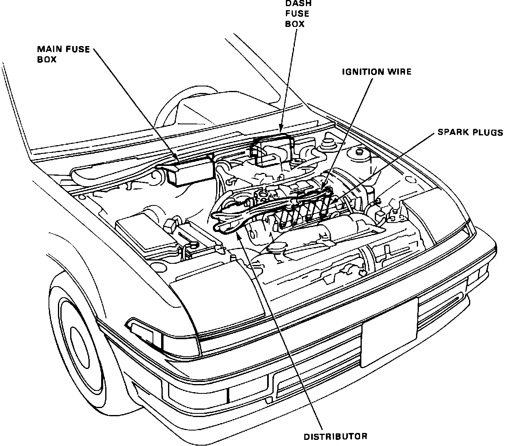
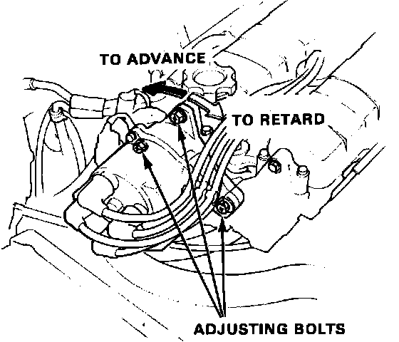

Crankshaft Position Sensor: Locations
Component Location:

CRANKSHAFT POSITION SENSOR
Located in the distributor assembly.
DISTRIBUTOR ASSEMBLY
Located on the right hand side of the engine.
Fig. 8 Distributer Adjusting Bolts:

DISTRIBUTOR ADJUSTING BOLTS
The Distributor Adjusting Bolts (3) are located on the base plate of the distributor.
ELECTRONIC CONTROL UNIT (ECU)
Located under the passenger seat.
IGNITER
Located in the distributor assembly.
IGNITION COIL
Located in the distributor assembly.
TDC SENSOR
Located in the distributor assembly.